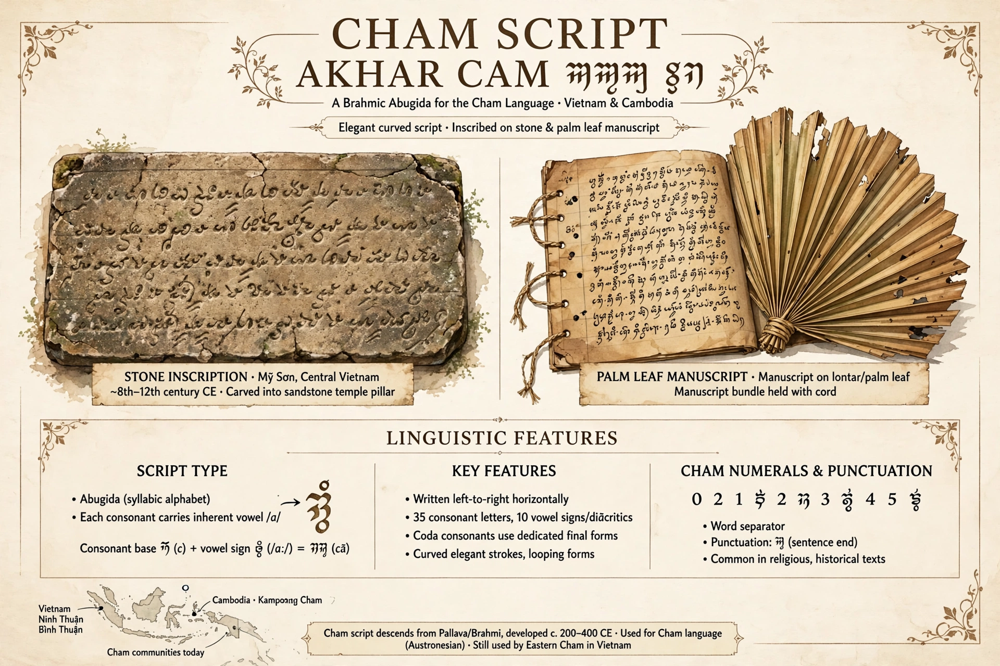

The Cham script is a Brahmic abugida used to write the Cham language of the Cham people of Vietnam and Cambodia. It is one of the earliest scripts of Southeast Asia, descending from the Pallava script of southern India via early inscriptions of the Champa kingdom.

| Type | Abugida |
|---|---|
| Languages | Cham |
| Direction | Left-to-right |
Like other Indic scripts, consonant letters carry an inherent vowel, modified by diacritics. Eastern Cham (akhar thrah) used in Vietnam preserves the traditional script for ritual and education, while Western Cham in Cambodia more often uses an Arabic-based script (akhar srak). Cham is notable for preserving final consonant letters and for its system of nasalisation and vowel signs. The script was added to Unicode in 2008.